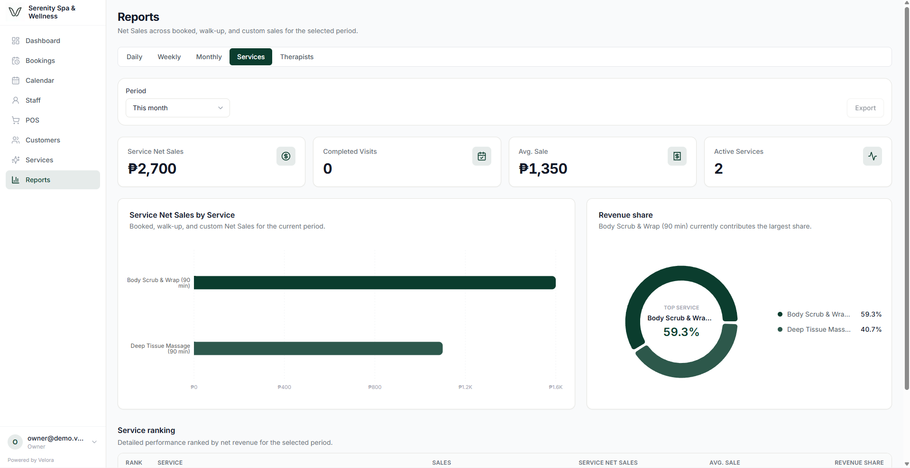

01 / FLAGSHIP PRODUCT
Velora
A multi-tenant business operating platform for spas, salons, clinics, and service-based businesses.
Velora brings daily operations into one system: bookings, customers, staff, services, POS, reports, permissions, memberships, loyalty, commissions, inventory, and multi-branch management.
TYPESaaS Platform
FOCUSBusiness Operations
STACKNext.js · NestJS · Supabase
Product SupportMulti-tenantRBACBookingsPOSReporting
Velora / Business OS

LIVE PRODUCT WORKOperations · Product · QA